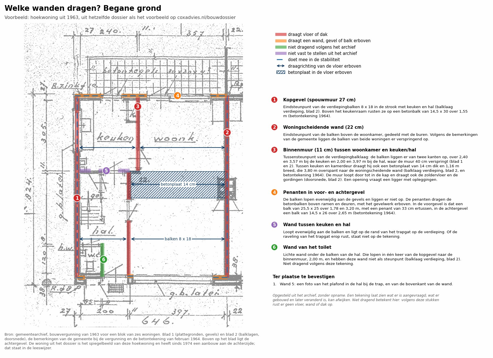

Een muur is dragend als er iets op rust: de vloer erboven, een muur op de verdieping of het dak. Op de bouwtekening zie je dat aan de richting van de vloerbalken, en die staat op de tekening van de balklaag of in de doorsnede, niet op de plattegrond zelf.
Twijfel je over een muur? Stuur ons een paar foto's en de tekening als je die hebt, dan kijkt onze constructeur kosteloos mee en zegt hij wat de doorbraak kost.
Haal je een dragende muur weg zonder er een balk voor in de plaats te leggen, dan moet de vloer erboven ineens een veel grotere afstand overspannen. Daarom loont het om eerst te weten wat er op een muur rust.
Op een plattegrond is metselwerk meestal gevuld getekend en een kozijn met twee dunne lijnen. Daarmee weet je waar de muren staan, maar nog niet welke dragen. Een lijn die buiten het huis doorloopt is een maatlijn en geen muur.
Welke muren dragen, volgt uit de vloer erboven. In het bouwdossier zit vaak een aparte tekening van de balklaag, met de richting en de maat van de balken. Een muur waar de balken haaks op staan, draagt die vloer. Een muur die evenwijdig aan de balken loopt, niet.
Staat er geen balklaag in het dossier, kijk dan in de doorsnede. Balken die haaks op de doorsnede lopen, zijn daar als rijtje blokjes getekend, en je ziet op welke muren ze uitkomen. Spreken doorsnede en plattegrond elkaar tegen, dan geeft de doorsnede meestal de doorslag, want daarin is de vloer zelf getekend.
Op de funderingstekening zie je onder welke muren een strook ligt. Een muur met een eigen fundering is gebouwd om te dragen.

In dit voorbeeld staat de balklaag op blad 2 van het dossier. De vloerbalken van 8 bij 18 centimeter lopen van de kopgevel naar de woningscheidende wand, en onderweg liggen ze op de binnenmuur tussen woonkamer en keuken. Die muur is maar 11 centimeter dik en draagt toch de verdiepingvloer. Het wandje van het toilet staat onder balken die in één keer doorlopen en draagt niets. De muur tussen keuken en hal loopt evenwijdig aan de balken, maar of het trapgat erboven erop rust, staat niet op de tekening. Dat wordt ter plaatse met een foto bekeken.
Een tekening laat zien wat er destijds is aangevraagd. Sindsdien kan er van alles veranderd zijn. Bij een herenhuis in Utrecht stond de gangmuur op de tekening nog helemaal, terwijl er inmiddels een flink stuk van weg was. Leg de tekening dus altijd naast wat er nu staat.
Het dossier ligt bij het gemeentearchief, en welk archief dat is hangt af van het bouwjaar. Op coxadvies.nl/bouwdossier zie je bij welk archief het dossier van jouw adres ligt.
De meeste huizen hebben een houten vloer van balken met planken erop, of een betonvloer. Balken rusten met hun uiteinden op een muur. Staat de muur haaks op de balken, dan liggen ze erop. Loopt hij er evenwijdig aan, dan draagt hij die vloer niet.
Je hoeft niets open te maken om de richting te zien. De vloerdelen op de verdieping liggen haaks op de balken. Op zolder of in de kruipruimte zie je de balken vaak gewoon liggen, en door het gat van een inbouwspot ook. Een betonvloer ligt ook van muur naar muur, maar welke kant op zie je van onderen meestal niet.
Een dikke muur is meestal dragend, maar een dunne muur kan net zo goed de hele vloer dragen. In drie rijtjeshuizen in Nijmegen uit 1961, 1962 en 1963 lag de verdiepingvloer telkens op een binnenmuur van 11 centimeter tussen woonkamer en keuken. Zonder die muur zou de vloer zo'n zes meter moeten overspannen.
Een wandje van gipsblokken of houten regels draagt meestal niets. Is het later onder een balklaag gezet die al wat doorhing, dan kan het in de loop der jaren toch gewicht zijn gaan dragen.
Let op: stabiliteit
Een muur kan ook nodig zijn als er geen vloer op ligt. Een huis moet blijven staan als de wind ertegen duwt, en daar zorgen muren in de lengte en de breedte voor. In een rijtjeshuis zijn dat meestal de muren tussen de woningen. In een vrijstaand huis of een huis met veel glas in de gevels kan een binnenmuur die taak hebben.
Stuur ons een paar foto's van de muur, de ruimte erboven en als je die hebt de plattegrond. Onze constructeur kijkt kosteloos mee en zegt je wat hij ziet. Wil je het op papier, dan vraagt hij de bouwtekening van je huis op bij het archief en zet hij de dragende wanden op de plattegrond, met per wand de reden, zoals in het voorbeeld hierboven. Hoe dat gaat en wat het kost, lees je op coxadvies.nl/dragende-muur.
Stuur een paar foto's en je hoort binnen één werkdag waar je aan toe bent.